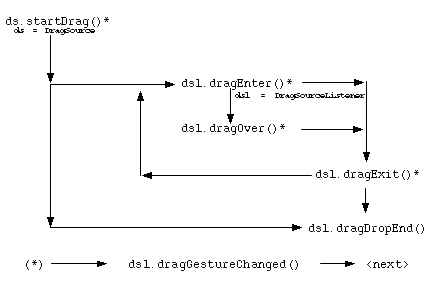
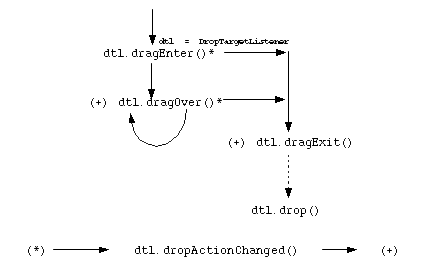

This document has these sections:
This specification defines the API for the drag and drop facilities for the Java 2 Platform.
The primary requirements that this specification addresses, are:
java.awt.datatransfer.*
package to enable the transfer of data, described by an extensible
data type system based on the MIME standard.The specification derives from the previous work mentioned above, but incorporates significant differences from that original work as a result of the advent of the JavaBeans event model, lightweight (Swing) components, and an increasing understanding of the cross-platform integration and interoperability issues.
The following sections cover the drag and drop API.
Drag and drop is a direct manipulation gesture found in many graphical user interface systems that provides a mechanism to transfer information between two entities logically associated with presentation elements in the GUI. Normally driven by a physical gesture of a human user using an appropriate input device, drag and drop provides both a mechanism to enable continuous feedback regarding the possible outcome of any subsequent data transfer to the user during navigation over the presentation elements in the GUI, and the facilities to provide for any subsequent data negotiation and transfer.
A typical drag and drop operation can be decomposed into the following states (not entirely sequentially):
DragSource comes into existence, associated with
some presentation element (Component) in the GUI, to
initiate a drag and drop of some potentially
Transferable data.DropTargets come into/go out of
existence, associated with presentation elements in the GUI
(Components), potentially capable of consuming
Transferable data types.DragGestureRecognizer is obtained from the
DragSource and is associated with a
Component in order to track and identify any drag
initiating gesture by the user over the
Component.Component, which the registered
DragGestureRecognizer detects, and notifies its
DragGestureListener of.
Note: Although the body of this document consistently refers to
the stimulus for a drag and drop operation being a physical gesture
by a human user this does not preclude a programmatically driven
DnD operation given the appropriate implementation of a
DragSource.
DragGestureListener causes the
DragSource to initiate the drag and drop operation on
behalf of the user, perhaps animating the GUI Cursor
and/or rendering an Image of the item(s) that are the
subject of the operation.Component(s) in
the GUI with associated DropTarget(s), the
DragSource receives notifications in order to provide
"Drag Over" feedback effects, and the DropTarget(s)
receive notifications in order to provide "Drag Under" feedback
effects based upon the operation(s) supported and the data type(s)
involved.
The gesture itself moves a logical cursor across the GUI
hierarchy, intersecting the geometry of GUI
Component(s), possibly resulting in the logical "Drag"
cursor entering, crossing, and subsequently leaving
Component(s) and associated
DropTarget(s).
The DragSource object manifests "Drag Over"
feedback to the user, in the typical case by animating the GUI
Cursor associated with the logical cursor.
DropTarget objects manifest "Drag Under" feedback
to the user, in the typical case, by rendering animations into
their associated GUI Component(s) under the GUI
Cursor.
DragSource and DropTarget:
Copy, Move or Reference(link).DragSource and the set of data types comprehensible by
the DropTarget.DragSource and
DropTarget receive notifications that include, and
result in the type negotiation and transfer of, the information
associated with the DragSource via a
Transferable object.The remainder of this document details the proposed API changes to support this model.
The gesture(s) that can initiate a drag and drop operation vary,
not only per platform, but also per Component, and per
device. Therefore a mechanism is required in order to encapsulate
these dependencies, thus making the task of the author of a
Component that wishes to initiate a drag and drop
operation much simpler.
The DragGestureRecognizer is an abstract base class
for all device/platform/Component specific drag and
drop gesture recognizers, and is defined as:
public abstract DragGestureRecognizer {
protected DragGestureRecognizer(
DragSource ds,
Component c,
int srcActions,
DragGestureListener dgl
);
public Component getComponent();
public void setComponent(Component c);
public int getSourceActions();
public void setSourceActions(int actions);
public java.awt.InputEvent getTriggerEvent();
public void resetRecognizer();
public void addDragGestureListener(
DragGestureListener dgl
) throws TooManyListenerExceptions;
public void removeDragGestureListener(
DragGestureListener dgl
);
protected abstract void registerListeners();
protected abstract void unregisterListeners();
protected void fireDragGestureRecognized(
int dragAction
);
protected void appendEvent(InputEvent awtie);
}
An appropriate concrete subclasses of
DragGestureRecognizer for a particular may be obtained
in a variety of ways; from a DragSource instance, from
the Toolkit, or by other means. Concrete
implementation subclasses are obtained through standard APIs' by
specifying a Class reference to an abstract
DragGestureRecognizer superclass, an instance of a
concrete subclass of this actual parameter is instantiated and
returned to the requestor.
Once a DragGestureRecognizer instance is associated
with a Component and a DragSource it
registers its own particular set of EventListeners'
with the target Component in order to monitor the
appropriate events being delivered to that Component
to detect an initiating gesture. (Using
registerListeners and unregisterListeners
to add/remove these monitoring EventListeners').
Note that a DragGestureRecognizer may throw either
an IllegalStateException or an
IllegalArgumentException if either the
Component or DragSource specified is
either not in the correct state for, or is not interoperable with,
that DragGestureRecognizer.
When a concrete DragGestureRecognizer instance
detects a drag-initiating user gesture on the
Component it is associated with, it will fire a
DragGestureEvent to the
DragGestureListener registered on its unicast event
source for DragGestureListener events. This
DragGestureListener is responsible for causing the
associated DragSource to start the drag and drop
operation (if appropriate).
The implementation provides (at least) an abstract subclass for
recognizing mouse device gestures
MouseDragGestureRecognizer. Other abstract subclasses
may be provided by the platform to support other input devices or
particular Component class semantics. Concrete superclasses of this
MouseDragGestureRecognizer that encapsulate platform
dependent mouse based gestures are available from the
Toolkit object via its
createDragGestureRecognizer(Class adgrc, DragSource ds,
Component c, int sa, DragGestureListener dgl) method. This
Toolkit API provides platform dependent concrete
implementations that extend particular platform independent
abstract definitions (classes).
The MouseDragGestureRecognizer abstract class is
defined as:
public abstract MouseDragGestureRecognizer
extends DragGestureRecognizer
implements MouseListener, MouseMotionListener {
public MouseDragGestureRecognizer(
DragSource ds,
Component c,
int sa,
DragGestureListener dsl
);
//...
}
The DragGestureListener is defined as:
public interface DragGestureListener extends EventListener {
void dragGestureRecognized(DragGestureEvent dge);
}
Usually the dragGestureRecognized() method will
simply, via the DragGestureEvent's convenience API
startDrag, start a drag and drop operation on the
associated DragSource.
Note that per Component (class or instance)
behavior that may effect the initiating gesture would usually be
implemented in this DragGestureListener method, or in
the DragGestureRecognizer subclass where appropriate
or possible.
The DragGestureEvent is defined as:
publc class DragGestureEvent extends EventObject {
public DragGestureEvent(DragGestureRecognizer dgr,
int dragAction,
java.util.List events
);
public DragGestureRecognizer getSourceAsDragGestureRecognizer();
public Component getComponent();
public DragSource getDragSource();
public java.util.Iterator iterator();
public Object[] toArray();
public Object[] toArray(Object[] array);
public int getDragAction();
public startDrag(Cursor dragCursor,
Transferable t,
DragSourceListener dsl
);
public startDrag(Cursor dragCursor,
Image dragImage,
Point imageOffset,
Transferable t,
DragSourceListener dsl
);
//...
}
The DragGestureEvent encapsulates all the
information regarding the nature of the gesture that has just been
recognized, including:
DragGestureRecognizer that recognized the
gestureComponent that the gesture occurred onDragSource that will process the
operationInputEvent objects that comprise the
gesture.The DragSource is the entity responsible for the
initiation of the drag and drop operation:
The DragSource and associated constant interfaces
are defined as follows:
The DnDConstants class defines the operations that
may be applied to the subject of the transfer:
public final class java.awt.dnd.DnDConstants {
public static int ACTION_NONE = 0x0;
public static int ACTION_COPY = 0x1;
public static int ACTION_MOVE = 0x2;
public static int ACTION_COPY_OR_MOVE= ACTION_COPY | ACTION_MOVE;
public static int ACTION_REFERENCE = 0x40000000;
}
public class java.awt.dnd.DragSource {
public static Cursor DefaultCopyDrop;
public static Cursor DefaultMoveDrop;
public static Cursor DefaultLinkDrop;
public static Cursor DefaultCopyNoDrop;
public static Cursor DefaultMoveNoDrop;
public static Cursor DefaultLinkNoDrop;
public static DragSource getDefaultDragSource();
public static boolean isDragImageSupported();
public void startDrag(DragGestureEvent trigger,
Cursor dragCursor,
Image dragImage,
Point dragImageOffset,
Transferable transferable,
DragSourceListener dsl,
FlavorMap fm)
throws InvalidDnDOperationException;
protected DragSourceContext createDragSourceContext(
DragSourceContextPeer dscp,
DragGestureEvent trigger,
Cursor dragCursor,
Image dragImage,
Point dragImageOffset,
Transferable transferable,
DragSourceListener dsl
);
public FlavorMap getFlavorMap();
public DragGestureRecongizer createDragGestureRecognizer(
Class abstractRecognizerClass,
Component c,
int srcActions,
DragGestureListener dgl
);
public DragGestureRecongizer createDefaultDragGestureRecognizer(
Component c,
int srcActions,
DragGestureListener dgl
);
//...
}
The DragSource may be used in a number of
scenarios:
TextField). [implementation dependent]Component, or
application specific object associated with a
Component instance in the GUI. [implementation
dependent]A controlling object, shall obtain a DragSource
instance prior to a user's gesture, effecting an associated
Component, in order to process the operation. Once
obtained a DragGestureRecognizer should be obtained
and used to associate the DragSource with a
Component.
The initial interpretation of the user's gesture, and the
subsequent starting of the drag operation are the responsibility of
the implementing Component, this is usually
implemented by a DragGestureRecognizer.
When a gesture occurs, the DragSource's
startDrag method shall be invoked in order to cause
processing of the user's navigational gestures and delivery of drag
and drop protocol notifications. A DragSource shall
only permit a single drag and drop operation to be current at any
one time, and shall reject any further startDrag
requests by throwing an IllegalDnDOperationException
until such time as the extant operation is complete.
In order to start a drag operation the caller of the
startDrag method shall provide the following
parameters:
DragGestureEvent for the gesture.Cursor representing the initial "Drag Over"
feedback for the operation(s) specified. (This shall be a
Cursor that provides "No Drop" visual feedback to the
user).Image to visually represent the
item, or item(s) that are the subject(s) of the operation.On platforms that can support this feature, a "Drag" image may
be associated with the operation to enhance the fidelity of the
"Drag Over" feedback. This image would typically be a small
"iconic" representation of the object, or objects being dragged,
and would be rendered by the underlying system, tracking the
movement of, and coincident with, but typically in addition to the
Cursor animation.
Where this facility is not available, or where the image is not
of a suitable type to be rendered by the underlying system, this
parameter is ignored and only Cursor "Drag Over"
animation results, so applications should not depend upon this
feature. The presence of the facility on a particular platform may
be tested by invoking the static method
isDragImageSupported.
Image is provided; a Point
(in the co-ordinate space of the Component) specifying
the initial origin of that Image relative to the
co-ordinates of the "hotspot" of the drag "Cursor", in the
co-ordinate space of the Component, at the time of the
initial gesture, for the purposes of initiating a correctly
positioned "Drag Over" animation of that Image
relative to that "hotspot".Transferable that describes the various
DataFlavor(s) that represent the subject(s) of any
subsequent data transfer that may result from a successful Drop.
The Transferable instance associated with the
DragSource at the start of the drag operation,
represents the object(s) or data that are the operand(s), or the
subject(s), of the Drag and Drop operation, that is the information
that will subsequently be passed from the DragSource
to the DropTarget as a result of a successful Drop on
the Component associated with that
DropTarget.
Note that multiple (collections) of either homogeneous, or
heterogeneous, objects may be subject of a Drag and Drop operation,
by creating a container object, that is the subject of the
transfer, and implements Transferable. However it
should be noted that since none of the targeted native platforms
systems support a standard mechanism for describing and thus
transferring such collections it is not possible to implement such
transfers in a transparent, or platform portable fashion.
DragSourceListener instance, which will
subsequently receive events notifying it of changes in the state of
the ongoing operation in order to provide the "Drag Over" feedback
to the user.As stated above, the primary role of the startDrag
method is to initiate a Drag on behalf of the user. In order to
accomplish this, the startDrag method must create a
DragSourceContext instance to track the operation
itself, and more importantly it must initiate the operation itself
in the underlying platform implementation. In order to accomplish
this, the DragSource must first obtain a
DragSourceContextPeer from the underlying system
(usually via an invocation of
java.awt.Toolkit.createDragSourceContextPeer method)
and subsequently associate this newly created
DragSourceContextPeer (which provides a platform
independent interface to the underlying systems capabilities) with
a DragSourceContext.The startDrag method
invokes the createDragSourceContext method to
instantiate an appropriate DragSourceContext and
associate the DragSourceContextPeer with that.
If the drag and drop system is unable to initiate a drag
operation for some reason the startDrag method shall
throw a java.awt.dnd.InvalidDnDOperationException to
signal such a condition. Typically this exception is thrown when
the underlying platform system is either not in a state to initiate
a drag, or the parameters specified are invalid.
Note that during the drag neither the set of operations the
source exposed at the start of the drag operation may change for
the duration of the operation, in other words the operation(s) and
are constant for the duration of the operation with respect to the
DragSource.
The getFlavorMap method is used by the underlying
system to obtain a FlavorMap object in order to map
the DataFlavors exposed by the
Transferable to data type names of the underlying DnD
platform. [see later for details of the FlavorMap]
A "private" FlavorMap may be provided to the
startDrag() method of the DragSource, or
null, in which case the "default" FlavorMap for that
DragSource class or instance is used.
As a result of a DragSource's
startDrag method being successfully invoked an
instance of the DragSourceContext class is created.
This instance is responsible for tracking the state of the
operation on behalf of the DragSource and dispatching
state changes to the DragSourceListener.
The DragSourceContext class is defined as
follows:
public class DragSourceContext implements DragSourceListener {
public DragSourceContext(
DragSourceContextPeer dscp,
DragGestureEvent trigger,
Cursor dragCursor,
Image dragImage,
Point dragOffset,
Transferable transferable,
DragSourceListener dsl
);
public DragSource getDragSource();
public Component getComponent();
public DragGestureEvent getTrigger();
public Image getDragImage();
public Point getDragImageOffset();
public void transferablesFlavorsChanged();
public int getSourceActions();
public Cursor getCursor();
pbulic void setCursor(Cursor Cursor)
throws InvalidDnDOperationException;
public void addDragSourceListener(DragSourceListener dsl)
throws TooManyListenersException;
public void removeDragSourceListener(DragSourceListener dsl);
protected updateCurrentCursor(int dropOperation,
int targetActions,
int status
);
// values for status parameter above.
protected static final int DEFAULT = 0;
protected static final int ENTER = 1;
protected static final int OVER = 2;
protected static final int CHANGED = 3;
//...
}
Note that the DragSourceContext itself implements
DragSourceListener, this is to allow the platform
peer, the DragSourceContextPeer instance, created by
the DragSource, to notify the
DragSourceContext of changes in state in the ongoing
operation, and thus allows the DragSourceContext to
interpose itself between the platform and the
DragSourceListener provided by the initiator of the
operation.
The state machine the platform exposes, with respect to the source, or initiator of the Drag and Drop operation is detailed below:

Notifications of changes in state with respect to the initiator
during a drag and drop operation, as illustrated above, are
delivered from the DragSourceContextPeer, to the
appropriate DragSourceContext, which delegates
notifications, via a unicast JavaBeans compliant
EventListener subinterface, to an arbitrary object
that implements DragSourceListener registered with the
DragSource via startDrag.
The primary responsibility of the
DragSourceListener is to monitor the progress of the
user's navigation during the drag and drop operation and provide
the "Drag-Over" effects feedback to the user. Typically this is
accomplished via changes to the "Drag Cursor".
Every drag operation has 2 logical cursor states (Drag Cursors) associated with it:
Cursor, the cursor displayed when
dragging over a valid DropTarget.Cursor, the cursor displayed when
dragging over everything else (the initial state of the cursor at
the start of a drag).The state of the Cursor may be modified by calling
the setCursor method of the
DragSourceContext.
The DragSourceListener interface is defined as
follows:
public interface java.awt.dnd.DragSourceListener
extends java.util.EventListener {
void dragEnter (DragSourceDragEvent dsde);
void dragOver (DragSourceDragEvent dsde);
void dropActionChanged (DragSourceDragEvent dsde);
void dragExit (DragSourceEvent dse);
void dragDropEnd (DragSourceDropEvent dsde);
}
As the drag operation progresses, the
DragSourceListener's dragEnter,
dragOver, and dragExit methods shall be
invoked as a result of the user's navigation of the logical "Drag"
cursor's location intersecting the geometry of GUI
Component(s) with associated
DropTarget(s). [See below for details of the
DropTarget's protocol interactions].
The DragSourceListener's dragEnter
method is invoked when the following conditions are true:
Component's visible geometry.Component has an active
DropTarget associated.The DropTarget's registered
DropTargetListener dragEnter method is
invoked and returns successfully.
The registered DropTargetListener invokes the
DropTargetDragEvent's acceptDrag method
to accept the drag based upon interrogation of the source's
potential drop actions and available data types
(DataFlavors).
The DragSourceListener's dragOver method is invoked
when the following conditions are true:
Component associated with the
previous dragEnter invocation.Component still has a DropTarget
associated.DropTarget is still active.DropTarget's registered
DropTargetListener dragOver method is
invoked and returns successfully.DropTarget does not reject the drag via
rejectDrag.The DragSourceListener's dragExit
method is invoked when one of the following conditions is true:
Component associated with the previous
dragEnter invocation.
Or:
Component that the logical cursor's hotspot
intersected that resulted in the previous dragEnter
invocation, no longer has an active DropTarget (or
DropTargetListener) associated.
Or:
DropTarget's
DropTargetListener has invoked rejectDrag
since the last dragEnter or dragOver
invocation.The DragSourceListener's
dropActionChanged() method is invoked when the state
of the input device(s), typically the mouse buttons or keyboard
modifiers, that the user is interacting with in order to perform
the drag operation, changes.
The dragDropEnd() method is invoked to signify that
the operation is completed. The getDropSuccess method
of the DragSourceDropEvent can be used to determine
the termination state. The getDropAction method
returns the operation that the DropTarget selected
(via the DropTargetDropEvent acceptDrop
parameter) to apply to the drop operation.
Once this method is complete the current
DragSourceContext and the associated resources are
invalid.
The DragSourceEvent class is the root
Event class for all events pertaining to the
DragSource, and is defined as follows:
public class java.awt.dnd.DragSourceEvent extends java.util.EventObject {
public DragSourceEvent(DragSourceContext dsc);
public DragSourceContext getDragSourceContext();
//...
};
An instance of this event is passed to the
DragSourceListener dragExit method.
The DragSourceDragEvent class is defined as
follows:
public class java.awt.dnd.DragSourceDragEvent extends DragSourceEvent {
public int getTargetActions();
public int getUserAction();
public int getGestureModifiers();
public int getGestureModifiersEx();
public int getDropAction();
}
An instance of the above class is passed to a
DragSourceListener's dragEnter,
dragOver, and dragGestureChanged
methods.
The getDragSourceContext method returns the
DragSourceContext associated with the current drag and
drop operation.
The getUserAction method returns the action that is
currently selected by the user's gesture.
The getTargetActions method returns the drop action
selected by the current drop target if this drop action is
supported by the drag source or
DnDConstants.ACTION_NONE if this drop action is not
supported by the drag source.
The logical intersection of these two results and the set of
drop actions supported by the drag source defines the actual effect
of a drop and is returned via getDropAction.
The getGestureModifiers method returns the current
state of the input device modifiers, usually the mouse buttons and
keyboard modifiers, associated with the user's gesture.
The getGestureModifiersEx method returns the
current state of the input device extended modifiers associated
with the user's gesture.
The DragSourceDropEvent class is defined as
follows:
public public class java.awt.dnd.DragSourceDropEvent
extends java.util.EventObject {
public DragSourceDropEvent(DragSourceContext dsc);
public DragSourceDropEvent(DragSourceContext dsc,
int action,
boolean success);
public boolean getDropSuccess();
public int getDropAction();
}
An instance of the above class is passed to a
DragSourceListener's dragDropEnd method.
This event encapsulates the termination state of the drag and drop
operation for the DragSource.
If the drop occurs, then the participating
DropTarget will signal the success or failure of the
data transfer via the DropTargetContext's
dropComplete method, this status is made available to
the initiator via the getDropSuccess method. The
operation that the destination DropTarget selected to
perform on the subject of the drag (passed by the
DropTarget's acceptDrop method) is
returned via the getDropAction method.
If the drag operation was aborted for any reason prior to a drop
occurring, for example if the user ends the gesture outside a
DropTarget, or if the DropTarget invokes
rejectDrop, the getDropSuccess method
will return false, otherwise true.
The java.awt.Component class has two additional
methods added to allow the (dis)association with a
DropTarget. In particular:
public class java.awt.Component /* ... */ {
//...
public synchronized void setDropTarget(DropTarget dt);
public synchronized DropTarget getDropTarget(DropTarget df);
//...
}
To associate a DropTarget with a
Component one may invoke either;
DropTarget.setCompononent or
Component.setDropTarget methods. Thus conforming
implementations of both methods are required to guard against
mutual recursive invocations.
To disassociate a DropTarget with a
Component one may invoke either;
DropTarget.setCompononent(null) or
Component.setDropTarget(null) methods.
Conformant implementations of both setter methods in
DropTarget and Component should be
implemented in terms of each other to ensure proper maintenance of
each other's state.
The setDropTarget method throws
IllegalArgumentException if the
DropTarget actual parameter is not suitable for use
with this class/instance of Component. It may also
throw UnsupportedOperationException if, for instance,
the Component does not support external setting of a
DropTarget.
A DropTarget encapsulates all of the
platform-specific handling of the Drag and Drop protocol with
respect to the role of the recipient or destination of the
operation.
A single DropTarget instance may typically be
associated with any arbitrary instance of
java.awt.Component. Establishing such a relationship
exports the associated Components geometry to the
client desktop as being receptive to drag and drop operations when
the coordinates of the logical cursor intersects that visible
geometry.
The DropTarget class is defined as follows:
public class java.awt.dnd.DropTarget
implements DropTargetListener, Serializable {
public DropTarget(Component c,
int actions,
DropTargetListener dsl,
boolean isActive,
FlavorMap fm
);
public DropTarget();
public DropTarget(Component c);
public DropTarget(Component c, DropTargetListener dsl);
public Component getComponent();
public void setComponent(Component c);
public DropTargetContext getDropTargetContext();
public void addDropTargetListener(DropTargetListener dte)
throws TooManyListenersException;
public void removeDropTargetListener(DropTargetListener dte);
public void setActive(boolean active);
public boolean isActive();
public FlavorMap getFlavorMap();
public void setFlavorMap(FlavorMap fm);
public void setDefaultActions(int actions);
public int getDefaultActions();
protected DropTargetContext createDropTargetContext();
public void addNotify(ComponentPeer cp);
public void removeNotify(ComponentPeer cp);
// ...
}
The setComponent method throws
IllegalArgumentException if the Component
actual parameter is not appropriate for use with this
class/instance of DropTarget, and may also throw
UnsupportedOperationException if the
Component specified disallows the external setting of
a DropTarget.
The addDropTargetListener and
removeDropTargetListener methods allow the unicast
DropTargetListener to be changed.
The setActive and isActive methods
allow the DropTarget to be made active or otherwise
and for its current state to be determined.
The getFlavorMap methods is used to obtain the
FlavorMap associated with this DropTarget
for the purposes of mapping any platform dependent type names
to/from their corresponding platform independent
DataFlavors.
The setFlavorMap method allows a new
FlavorMap to be assigned to the
DropTarget, a parameter of null causes a "default"
FlavorMap to be installed for the
DropTarget.
The createDropTargetContext method is only invoked
to provide the underlying platform dependent peer with an
instantiation of a new DropTargetContext as a Drag
operation initially encounters the Component
associated with the DropTarget. If no
DropTargetContext is currently associated with a
DropTarget, a permitted side-effect of an invocation
of getDropTargetContext is to instantiate a new
DropTargetContext.
The addNotify and removeNotify methods
are only called from Component to notify the
DropTarget of the Component's
(dis)association with its ComponentPeer.
Note that the DropTarget itself implements
DropTargetListener, this is to allow the platform
peer, the DropTargetContextPeer instance, created by
the platform, to notify the DropTarget of changes in
state in the ongoing operation, and thus allows the
DropTarget to interpose itself between the platform
and the DropTargetListener registered with the
DropTarget.
As the logical cursor associated with an ongoing drag and drop
operation first intersects the visible geometry of a
Component with an associated DropTarget,
the DropTargetContext associated with the
DropTarget is the interface, through which, access to,
and control over state of the recipient protocol is achieved from
the DropTargetListener.
A DropTargetContext is created by a
DropTarget, via it's
createDropTargetContext method, as a side effect of a
call to a DropTarget's
getDropTargetContext method, if no
<>DropTargetContext currently exists for that
DropTarget.
The DropTargetContext interface is defined as
follows:
public class DropTargetContext {
public DropTarget getDropTarget();
public Component getComponent();
public void dropComplete(boolean success)
throws InvalidDnDOperationException;
public void acceptDrag(int dropAction);
public void rejectDrag();
public void acceptDrop(int dropAction);
public void rejectDrop();
public void addNotify(DropTargetContextPeer dtcp);
public void removeNotify();
protected Transferable createTransferableProxy(Transferable t,
boolean isLocal
);
protected void setTargetActions(int actions);
protected int getTargetActions();
protected DataFlavor[] getCurrentDataFlavors();
protected List getCurrentDataFlavorsAsList();
protected boolean isDataFlavorSupported(DataFlavor df);
protected Transferable getTransferable();
// ...
}
Most of the access and control methods are protected, since
public access to their state is usually achieved by calling through
a particular DropTargetEvent subclass that delegates
the request to the DropTargetContext.
The getDropTarget() method return the
DropTarget that created this
DropTargetContext.
The getComponent method returns the
Component associated with the DropTarget
that created this DropTargetContext.
The acceptDrag method is delegated from the similar
method on DropTargetDragEvent and is invoked from one
of the DropTargetListener's methods;
dragEnter(), dragOver or
dropActionChanged to signify that the recipient is
prepared to accept a drop with the operation specified, which is
usually the user's currently selected action.
The rejectDrag method is delegated from the similar
method on DropTargetDragEvent and is invoked from one
of the DropTargetListener's methods;
dragEnter, dragOver or
dropActionChanged to signify that the recipient is
unable to accept a drop with the user's currently selected
action.
The acceptDrop method is delegated from the similar
method on DropTargetDropEvent and is invoked from the
DropTargetListener's drop method to
signify that the recipient is prepared to accept a drop with the
operation specified, which is usually the user's currently selected
action.
The rejectDrop method is delegated from the similar
method on DropTargetDropEvent and is invoked from the
DropTargetListener's drop method to
signify that the recipient is unable to accept a drop with the
user's currently selected action. This terminates a drag and drop
operation without a data transfer.
The dropComplete method signals to the originating
DragSource that the DropTargetListener
has completed the transfer(s) that comprise the subject of the drag
and drop operation and that the operation is complete. The success
(or failure) of the transfer(s) and the subsequent application of
the operation specified is signaled by the value of the actual
parameter.
The getDataFlavors method returns an array of the
DataFlavors available from the
DragSource.
The getTransferable method returns a
Transferable (not necessarily the one the
DragSource registered, it may be a proxy, and
certainly shall be in the inter-JVM case) to enable data transfers
to occur via its getTransferData method. Note that it
is illegal to invoke getTransferable without first
invoking an acceptDrop.
The addNotify and removeNotify methods
are exclusively called by the underlying platform's
DropTargetContextPeer in order to notify the
DropTargetContext that a drag and drop operation is
occurring/ceasing on the DropTargetContext and
associated DropTarget.
The createTransferableProxy method enables a
DropTargetContext implementation to interpose a
Transferable between the
DropTargetListener and the Transferable
provided by the caller, which is typically the underlying platform
DropTargetContextPeer.
Providing the appropriate "Drag-under" feedback semantics, and
processing of any subsequent Drop, is enabled through the
DropTargetListener asssociated with a
DropTarget.
The DropTargetListener determines the appropriate
"Drag-under" feedback and its response to the
DragSource regarding drop eligibility by inspecting
the sources suggested actions, the data types available and the
data itself.
A particular DropTargetListener instance may be
associated with a DropTarget via
addDropTargetListener and removed via
removeDropTargetListener methods.
public interface java.awt.dnd.DropTargetListener
extends java.util.EventListener {
void dragEnter (DropTargetDragEvent dtde);
void dragOver (DropTargetDragEvent dtde);
void dropActionChanged (DropTargetDragEvent dtde);
void dragExit (DropTargetDragEvent dtde);
void drop (DropTargetDropEvent dtde);
}

The dragEnter method of the
DropTargetListener is invoked when the hotspot of the
logical "Drag" Cursor intersects a visible portion of the
DropTarget's associated Component's
geometry. The DropTargetListener, upon receipt of this
notification, shall interrogate the operations or actions, and the
types of the data (DataFlavors) and the data itself as
supplied by the DragSource to determine the
appropriate actions and "Drag-under" feedback to respond with
invocation of either acceptDrag or
rejectDrag.
The dragOver method of the
DropTargetListener is invoked while the hotspot of the
logical "Drag" Cursor, in motion, continues to intersect a visible
portion of the DropTarget's associated
Component's geometry. The
DropTargetListener, upon receipt of this notification,
shall interrogate the operation "actions" the types of the data and
the data itself as supplied by the DragSource to
determine the appropriate "actions" and "Drag-under" feedback to
respond with an invocation of either acceptDrag or
rejectDrag.
The dragExit method of the
DropTargetListener is invoked when the hotspot of the
logical "Drag" Cursor ceases to intersect a visible portion of the
DropTarget's associated Component's
geometry, or immediately prior to a drop notification.
The DropTargetListener, upon receipt of this
notification, shall undo any "Drag-under" feedback effects it has
previously applied. Note that the DropTargetContext
associated with the DropTarget is invalidated as a
side-effect.
The drop method of the
DropTargetListener is invoked as a result of the user
terminating their drag gesture while intersecting. The
DropTargetListener, upon receipt of this notification,
shall perform the operation specified by the return value of the
getSourceActions method on the
DropTargetDropEvent object, upon the
Transferable object returned from the
getTransferable method, and subsequently invoke the
dropComplete method of the associated
DropTargetContext to signal the success, or otherwise,
of the operation.
The DropTargetEvent and
DropTargetDragEvent are defined as follows:
public abstract class java.awt.dnd.DropTargetEvent
extends java.util.EventObject {
public DropTargetContext getDropTargetContext();
//...
}
A DropTargetEvent is passed to the
DropTargetListener's dragExit method.
public class java.awt.dnd.DropTargetDragEvent
extends java.awt.dnd.DropTargetEvent {
public Transferable getTransferable();
public Point getLocation();
public int getSourceActions();
public getDropAction();
public DataFlavor[] getCurrentDataFlavors();
public List getCurrentDataFlavorsAsList();
public boolean isDataFlavorSupported();
public void acceptDrag(int operation);
public void rejectDrag();
//...
}
A DropTargetDragEvent is passed to the
DropTargetListener's dragEnter,
dragOver and dropActionChanged
methods.
The getLocation method return the current
co-ordinates, relative to the associated Component's
origin, of the hotspot of the logical "Drag" cursor.
The getSourceActions method returns the current
"actions", or operations (ACTION_MOVE, ACTION_COPY, or
ACTION_REFERENCE) the DragSource associates with the
current drag and drop gesture.
The return value of the getDropAction method is the
action that is selected by the user's gesture.
The getCurrentDataFlavors,
getCurrentDataFlavorsAsList and
isDataFlavorSupported methods are provided in order
for the recipient to interrogate the list of types available from
the source.
The getTransferable method is provided in order for
the recipient to interrogate the data available from the source.
Note that getTransferable on the
DropTargetDragEvent instance should only be called
within the respective DropTargetListener's method, and
all the necessary data should be retrieved from the returned
Transferable before that method returns.
The DropTargetDropEvent is defined as follows:
public class java.awt.dnd.DropTargetDropEvent
extends java.awt.dnd.DropTargetEvent {
public Point getLocation();
public int getSourceActions();
public int getDropAction();
public void acceptDrop(int dropAction);
public void rejectDrop();
public boolean isLocalTransfer();
public DataFlavor[] getCurrentDataFlavors();
public List getCurrentDataFlavorsAsList();
public boolean isDataFlavorSupported(DataFlavor df);
public Transferable getTransferable();
public void dropComplete(boolean success);
//...
}
A DropTargetDropEvent is passed to the
DropTargetListener's drop method, as the
drop occurs. The DropTargetDropEvent provides the
DropTargetListener with access to the data associated
with the operation, via the Transferable returned from
the getTransferable method.
The return value of the getSourceActions method is
defined to be the action(s) defined by the source at the time at
which the drop occurred.
The return value of the getDropAction method is the
action that is selected by the user's gesture.
The return value of the getLocation method is
defined to be the location at which the drop occurred.
The getCurrentDataFlavors,
getCurrentDataFlavorsAsList, and
isDataFlavorSupported, methods are provided in order
for the recipient to interrogate the list of types available from
the source for subsequent transfer via the
getTransferData method of the
Transferable.
A typical implementation of the drop method will
inspect the actions and the DataFlavors' available to
determine if a successful exchange can occur or not.
When an exchange may occur, a
DropTargetListener.drop implementation shall invoke
acceptDrop with the selected operation as an actual
parameter, prior to any invocation of getTransferable.
Calling getTransferable prior to
acceptDrop shall result in an
InvalidDnDOperationException.
The rejectDrop shall be called to reject the drop
operation. Once called no further interaction can occur between the
two participants, therefore it is typical to return from the
drop method immediately after calling this.
The isLocalTransfer method shall return true, if
the source of the drag and drop operation resides within the same
physical JVM as the recipient of the drop
notification, and false otherwise.
This distinction is significant to the recipient when it
receives object references back from invoking
Transferable.getTransferData in the local case, since
in this case the object reference it receives is the same object
reference held by the source (i.e it is not a copy, proxy or
distinct object) thus the recipient must treat such a shared object
reference differently in the local case as follows:
dropCompete that the transfer is effected. (Note that
a source is also prohibited from modifying the state of such an
object after it has returned such an object from it's
getTransferData method, until such time as it receives
a dragDropEnd notification.)dropComplete
and dragDropEnd methods have been processed.
Thereafter the sharing semantics are implementation dependent upon
the object(s) shared.The dropComplete method signals the end of the
associated drag and drop operation, and indicates the success (or
failure) of the transfers performed by the recipient. Invoking this
method results in the DragSourceListener's
dragDropEnd method being called with the appropriate
state available from it's DragSourceDropEvent. Failure
to invoke this method will result in the drag and drop operation
failing to terminate properly.
Many GUI Components present a scrollable "viewport"
over a (potentially) large dataset. During a drag and drop
operation it is desirable to be able to "autoscroll" such
"viewports" to allow a user to navigate over such a dataset,
scrolling to locate a particular member (initially not visible
through the "viewport") that they wish to drop the subject of the
operation upon.
Components that are scrollable provide drag
"autoscrolling" support to their DropTarget by
implementing the following interface:
public interface Autoscroll {
Insets getAutoscrollInsets();
void autoScrollContent(Point cursorLocn);
}
An implementing DropTarget shall periodically call
the autoscroll method of its associated
Component (if present), passing the current logical
cursor location in Component co-ordinates, when the
following conditions are met:
Component's visible geometry and the boundary region
described by the Insets returned by the
getAutoscrollInsets method.Should any of the above conditions cease to be valid, autoscrolling shall terminate until the next triggering condition occurs.
Both the initial delay prior to autoscrolling commencing, the
interval between autoscrolling notifications, and the pixel
hysteresis value are externally configurable and can be queried
from the Toolkit.getDesktopProperty method.
In the case where a valid drop occurs, the
DropTargetListener's drop method is
responsible for undertaking the transfer of the data associated
with the gesture. The DropTargetDropEvent provides a
means to obtain a Transferable object that represent
that data object(s) to be transferred.
From the drop method, the
DropTargetListener shall initially either
rejectDrop (immediately returning thereafter) or
acceptDrop specifying the selected operation from
those returned by getSourceActions.
Subsequent to an acceptDrop, but not before,
getTransferable may be invoked, and any data transfers
performed via the returned Transferable's
getTransferData method. Finally, once the destination
of the drop has completed the transfer(s) of the objects from the
source it shall signal the success, or immediate failure, of the
transfer(s) via an invocation of
DropTargetContext.dropComplete.
Upon returning from the
DropTargetContext.dropComplete method the
Transferable and DragSourceContext
instances are no longer guaranteed to be valid and all references
to them shall be discarded by the recipient to allow them to be
subsequently garbage collected.
When using the ACTION_REFERENCE operation the source and
destination should take care to agree upon the object and the
associated semantics of the transfer. Typically in intra-JVM
transfers a live object reference would be passed between source
and destination, but in the case of inter-JVM transfers, or
transfers between native and Java applications, live object
references do not make sense, so some other ‘reference' type
should be exchanged such as a URI for example. Both the
DragSource and DropTarget can detect if
the transfer is intra-JVM or not.
All the target DnD platforms represent their transfer data types
using a similar mechanism, however the representations do differ.
The Java platform uses MIME types encapsulated within a
DataFlavor to represent its data types. Unfortunately
in order to permit the transfer of data between Java and platform
native applications the existence of these platform names need to
be exposed, thus a mechanism is required in order to create an
extensible (platform independent) mapping between these platform
dependent type names, their representations, and the Java MIME
based DataFlavors.
The implementation will provide a mechanism to externally
specify a mapping between platform native data types (strings) and
MIME types (strings) used to construct DataFlavors.
This external mapping will be used by the underlying platform
specific implementation code in order to expose the appropriate
DataFlavors (MIME types), exported by the source, to
the destination, via the underlying platform DnD mechanisms.
Both the DragSource and DropTarget
classes provide access for the underlying system to map platform
dependent names to and from DataFlavors.
public interface java.awt.datatransfer.FlavorMap {
java.util.Map getNativesForFlavors(DataFlavor[] dfs);
java.util.Map getFlavorsForNatives(String[] natives);
}
The getNativesForFlavors method takes an array of
DataFlavors and returns a Map object
containing zero or more keys of type DataFlavor, from
the actual parameter dfs, with associated values of
type String, which correspond to the
platform-dependent type name for that MIME type.
The getFlavorsForNatives method takes an array of
String types and returns a Map object
containing zero or more keys of type String, from the
actual parameter natives, with associated values of type
DataFlavor, which correspond to the
platform-independent type for that platform-dependent type
name.
The Map object returned by both methods may be
mutable but is not required to be.
If NULL is passed to either of these methods they should return their current map of all keys and values known to the implementation at the time of the call.
For example on Win32 the Clipboard Format Name for simple text
is "CF_TEXT" (actually it is the integer 1) and on Motif it is the
X11 Atom named "STRING", the MIME type one may use to represent
this would be "text/plain;charset=us-ascii". Therefore a platform
portable FlavorMap would map between these names;
CF_TEXT on win32 and STRING on Motif/X11.
Typically, as implemented in the SystemFlavorMap
these mappings are held in an external persistent configuration
format (a properties file or URL) and are loaded from the platform
to configure the FlavorMap appropriately for a given
platform.
The SystemFlavorMap class is provided to implement
a simple, platform configurable mechanism for specifying a
system-wide set of common mappings, and is defined as follows:
public class java.awt.datatransfer.SystemFlavorMap implements FlavorMap, FlavorTable {
public static FlavorMap getSystemFlavorMap();
public synchronized Map getNativesForFlavors(DataFlavor[] dfs);
public synchronized Map getFlavorsForNatives(String[] natives);
public static String encodeDataFlavor(DataFlavor flav);
public static String encodeJavaMIMEType(String mimeType);
public static boolean isJavaMIMEType(String mimeStr);
public static String decodeJavaMIMEType(String nat);
public static DataFlavor decodeDataFlavor(String nat);
//...
}
The SystemFlavorMap class provides a simple
implementation, using a properties file (see
java.awt.Properties), of a persistent platform
FlavorMap. Using the value of the AWT property
"AWT.flavorMapFileURL" (see Toolkit.getProperty) or
the default file location of System.getProperty("java.home")
+ File.separator + "lib" + File.separator +
"flavormap.properties", this class creates the appropriate
Maps from the properties found therein.
In addition the class provides several static convenience
functions used to encode and decode Java MimeTypes to
and from a platform dependent namespace. The syntax of the
properties file is:
{ <platform_type_name> ‘=' <IETF_MIME_RFC_conformant_specification> <nl> } *
The default implementations of DragSource and
DropTarget return the SystemFlavorMap
from their getFlavorMap method, unless they have been
provided with an overriding implementation.
Since one of the primary goals of this API is to allow drag and drop of data between Java and native applications this has some significant consequences upon the method and mechanism of the actual data encoding and exchange when data is passed across the boundary of the Java Virtual Machine.
Since one of the participants in such an exchange may be a native application, and thus has no knowledge of the Java type system, the drag and drop system cannot just exchange a Java object reference since the other participant may have no knowledge of, or capability to manipulate such a type.
When any exchange occurs, it can only do so, regardless of the implementation of the participants, if and only if both participants are agreed upon a familiar data type and encoding. Thus, sadly the burden of the exchange is born mostly by the participants themselves.
What this means in practical terms is that for "native" data formats, such as platform-dependent image, document, or other "Content-Types" the encoding and decoding of their associated external data format is the responsibility of the source and destination of the transfer.
The drag and drop system shall expose the external
representation of such "native" data types across the boundary of
the Java Virtual Machine as encapsulated within a
java.io.InputStream or a subclass thereof.
This means that any DataFlavor with a
representation class that extends java.io.InputStream
can be transferred, and will be exposed for transfer, across the
Java Virtual Machine boundary.
To implement the exchange of such a native data type, a
developer would define a DataFlavor with a MIME
"Content-Type" that describes the nature of the "native" data type,
with a representation class that extends a
java.io.InputStream class that encodes the data
encapsulated into a stream of bytes.
In particular such InputStream subclasses shall
implement the following semantics:
java.io.InputStream.
Provision of this constructor by a subclass of
java.io.InputStream will allow the drag and drop
system (associated with the DropTarget) to
automatically re-construct an instance of the representation class
specified by the requested DataFlavor, and initialize
it with an InputStream containing the encapsulated
data formatted according to the expectations of that subclass. Once
initialized this instance is returned to the caller of the
Transferable.getTransferData method, thus allowing the
caller to subsequently re-read and interpret the formatted content
of the data stream transferred.
InputStream.read(byte b[],
int off, int len).Provision of this method (or inheriting a superclasses
implementation) enables the drag and drop system (associated with
the DragSource) to automatically extract an encoded
stream of the encapsulated data from the Transferable,
thus enabling the transfer of the data across the JVM boundary as a
simple byte stream to the requestor of the particular
DataFlavor.
A typical subject of a Drag and Drop transfer is a list of one or more platform dependent filenames. In order to ease the programming task of developers either producing or consuming such lists the drag and drop system treats them as a special case.
If a DataFlavor is specified with a MIME
"Content-Type" of
application/x-java-file-list;class=java.util.List the
drag and drop system will expect the list elements to be a
homogeneous list of objects of type java.io.File. Thus
a source shall, if supporting the transfer of a list of files,
construct such a List of File objects
when such a DataFlavor is requested, and a recipient
shall expect such a List of File objects
if it requests such a valid DataFlavor from its
source. This special case provides a simple mechanism for the
transfer of lists of files between source and target.
It is possible to Drag and Drop object references between JVMs' by using the facilities of the RMI mechanism. The Drag and Drop system will automatically arrange for the transfer of any object reference that adheres to these requirements:
DataFlavor implements both
java.rmi.Remote and java.io.Serializable.
(the MIME "Content-Type" can be any suitable, arbitrary type or application/x-java-remote-object)
(effectively the object implementation class transferred should
be extended from java.rmi.server.UnicastRemoteObject
since the RMI system implements some required initialization,
without which the transfer will not complete properly).
If these conditions are met, then if an appropriate
DataFlavor is requested, then the object returned to
the requestor (if it is in a difference JVM from the source) will
be an RMI reference to an instance of the Remote
object subinterface specified as the representation class of the
DataFlavor.
Due to limitations of particular underlying platform drag and
drop and window system implementations, the interaction of a drag
operation, and the event delivery semantics to AWT
Components is platform dependent. Therefore during a
drag operation a DragSource may process platform
Window System Events pertaining to that drag to the exclusion of
normal event processing.
Due to interactions between the single-threaded design center of
the platform native DnD systems, and the native window system event
dispatching implementations in AWT, "callbacks" into
DropTargetListener and DragSourceListener
will occur either on, or synchronized with the AWT system event
dispatch thread. This behavior is highly undesirable for security
reasons but is an implementation, not architectural feature, and is
unavoidable.
To enable intra-JVM Drag and Drop Transfers the existing
DataFlavor class will be extended to enable it to
represent the type of a "live" object reference, as opposed to a
Serialized (persistent) representation of one. Such objects may be
transferred between source and destination within the same JVM and
ClassLoader context.
The MIME Content-Type shall be application/x-java-local-objectref.
Transferable objects, their associated
DataFlavors', and the objects that encapsulate the
underlying data specified as the operand(s) of a drag and drop
operation shall remain valid until, at least, the
DragSourceListener associated with the
DragSource controlling the operation, receives a
dragDropEnd. The lifetime of the subject(s) of the
operation, transferred between source and target is implementation
defined beyond that point in time.
The "source" of a successful Drag and Drop (ACTION_MOVE)
operation is required to delete/relinquish all references to the
object(s) that are the subject of the Transferable
immediately after transfer has been successfully completed. That is
before returning from the
DragSourceListener.dragDropEnd notification.
As a result of significant input from developers to an earlier version of the specification an additional operation/action tag; ACTION_REFERENCE was added to include existing platform Drag and Drop"Link" semantics.
It is believed that Reference, or Link, semantics are already sufficiently poorly specified for the platform native Drag and Drop to render it essentially useless even between native applications, thus between native and platform independent Java applications it is not recommended.
For Java to Java usage the required semantic; within the same
JVM/ClassLoader, is defined such that the destination
shall obtain a Java object reference to the subject(s) of the
transfer. Between Java JVM's or ClassLoaders, the
semantic is implementation defined, but could be implemented
through transferring either a URL from the source to the
destination or an RMI Remote reference.
Although not a normative part of this specification this definition is included for clarity:
public interface DropTargetPeer {
void addDropTarget(DropTarget dt);
void removeDropTarget(DropTarget dt);
}
Although not a normative part of this specification this definition is included for clarity:
public interface DragSourceContextPeer {
void startDrag(DragSourceContext dsc,
Cursor c,
Image di,
Point ioff
) throws InvalidDnDOperationException;
Cursor getCursor();
void setCursor(Cursor c) throws InvalidDnDOperationException;
void transferablesFlavorsChanged();
}
Although not a normative part of this specification this definition is included for clarity:
public interface DropTargetContextPeer {
int getTargetActions();
void setTargetActions(int actions);
DropTarget getDropTarget();
DataFlavor[] getTransferDataFlavors();
Transferable getTransferable() throws InvalidDnDOperationException;
boolean isTransferableJVMLocal();
void acceptDrag(int dragAction);
void rejectDrag();
void acceptDrop(int dropAction);
void rejectDrop();
void dropComplete(boolean success);
}